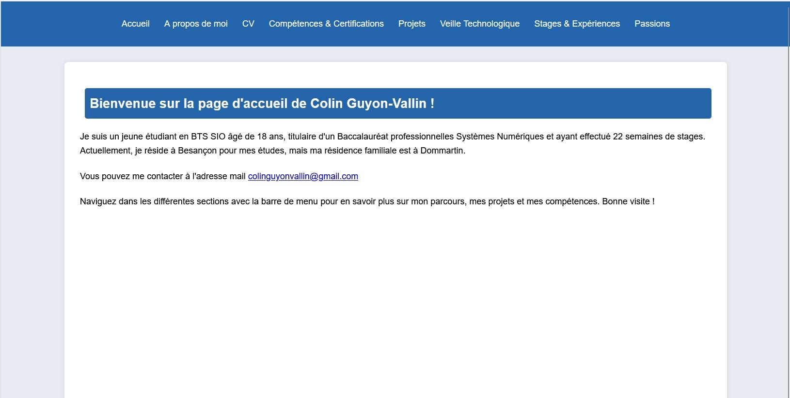

Mon Portfolio Web
Développement complet de mon site vitrine en HTML/CSS/JS.
La création de mon portfolio en ligne a été un projet enrichissant. J'ai commencé par des maquettes pour définir l'identité visuelle. Techniquement, j'ai utilisé HTML5 et CSS3 pour le design, et un peu de JavaScript pour l'interactivité. J'utilise Git pour le versioning.